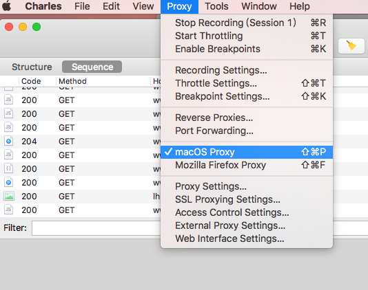
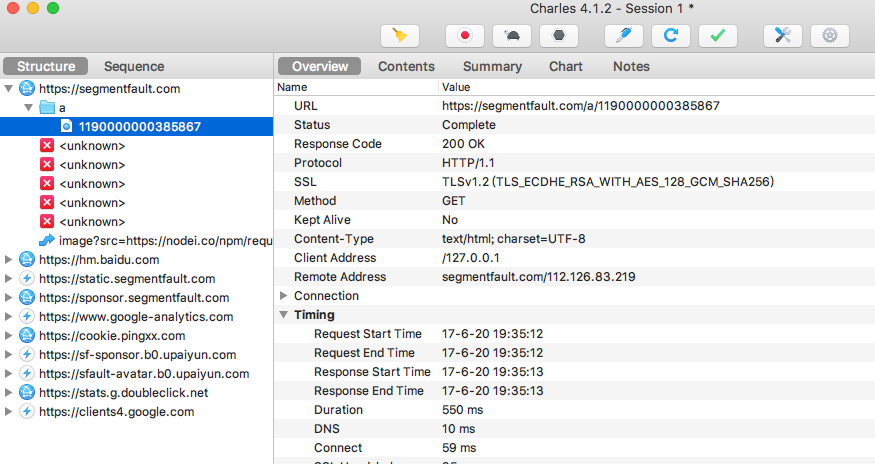
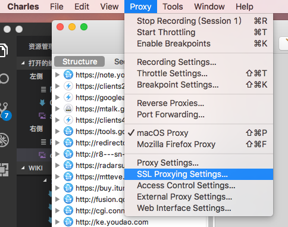
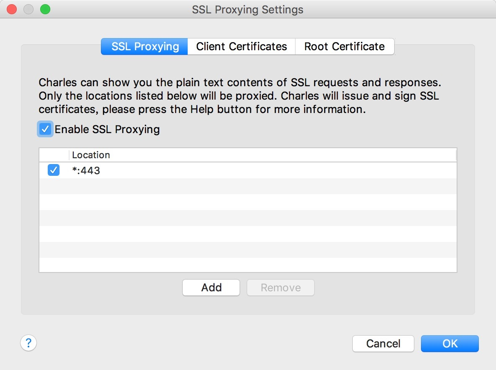
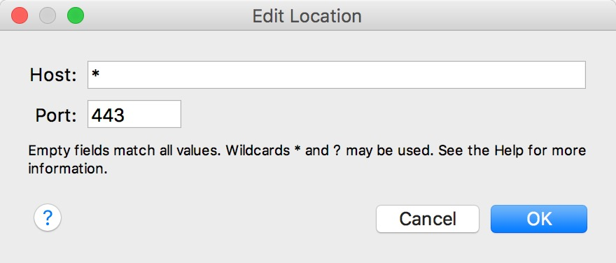
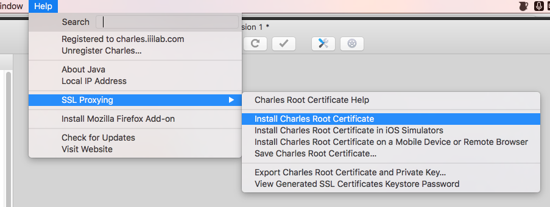
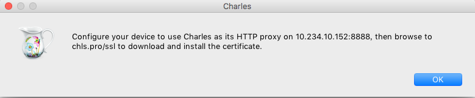
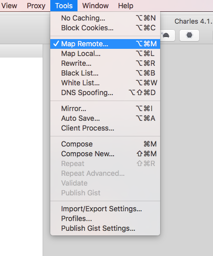
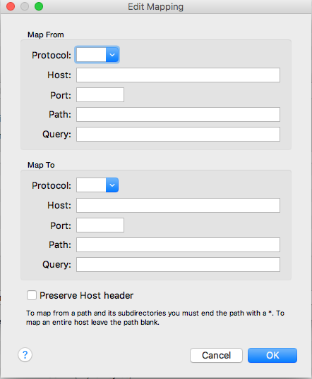

Charles安装破解使用教程
Charles 是什么，能干啥
Charles是一个对Mac系统非常友好的抓包工具（付费），使用场景包括线上/测试/本地/接口的代理，在APP里测试本地页面，手机同域host代理。
安装&破解
- 1. 下载安装包
- 2. 下载对应版本破解文件charles.jar，并替换掉原文件夹里的charles.jar
update 17/06/19: 破解参考
开启代理
依次点击 Proxy > macOS Proxy
默认是127.0.0.1 8888端口
PC抓包
此时打开任意浏览器，访问网址，就可以在charles里面看到发出的请求了。界面有两种显示方式：Structure 和Sequence，前者按照域名的路径结构树罗列请求，后者按照时间显示每一个请求，可以按照自己的需求自行选择喜欢的查看方式。顶部的按钮是一些常用功能，左起第一个扫帚button功能是清空请求记录，第二个红色录制button的功能是开始/停止抓包的切换。在content标签页可以查看某个请求的详细信息，包括cookies，query等。Sequence 显示界面有filter输入框可以过滤出你想要查看的请求。
手机抓包
在手机上设置当前wifi为手动代理，host为charles所在pc的ip，端口8888。这样手机的所有请求就会被charles捕获到。同时，我们经常在开发中为了带上cookie、避免跨域将本机host修改为test.XXXX.com，手机通过charles代理后，就免去了在手机上修改host的麻烦，直接可以访问电脑上可以访问的内容。
https抓包
1. charles设置SSL代理
Proxy >SL Proxying Setting > Enable SSL Proxying
 弹出ssl编辑窗口，将enable ssl Proxying勾选上 点击add按钮，添加新的规则，我们粗暴的设置为匹配任何域名的443端口，当然你可以指定抓取某个域名下的https请求
PC安装证书
Help > SSL Proxying > install Charles Root certificate 添加证书
选择始终信任该证书
手机安装证书
1. 手机访问 `http://chls.pro/ssl` 下载证书。
2. IOS 10.3以前的版本需要在 设置 > 通用 > 描述文件与设备管理 验证描述文件
3. IOS 10.3 以后的版本还要在 设置 > 通用 > 关于本机 > 证书信任设置 > 找到 charlesCA 然后信任该证书
Map Remote
这是我最喜欢的一个功能，简单说就是将任何请求映射到你想要的请求，可以是:
- 本地服务->远程，test.XXXX.com/api/get -> online.XXXX.com/api/get
- 远程->远程, online1.XXXX.com/api/get -> online2.XXXX.com/api2/get2
- 文件->文件，online.XXXX.com/index.html -> test.XXXX.com/index.html
- 正则匹配路径->指定路径，test.XXXX.com/api/* -> online.XXXX.com/api/
因此可以自由地实现很多功能, 本地开发使用线上API；线上地址访问本地开发代码调试bug；在APP中访问本地开发服务。 相对应的Charles提供Map Local 功能，使用方法与Map Remote类似，只不过是将远程服务映射到本地绝对路径，不需要本地启服务。
开启 Map Remote
Tools > Map Remote
弹出设置窗口，勾选enable map remote，点击add按钮添加规则。
Map from 是你想要匹配映射的地址，设置协议，域名，端口，路径，query等，Map to 是映射的目标网址，就是你真正想要访问的地址，灵活配置，就能实现多种功能。